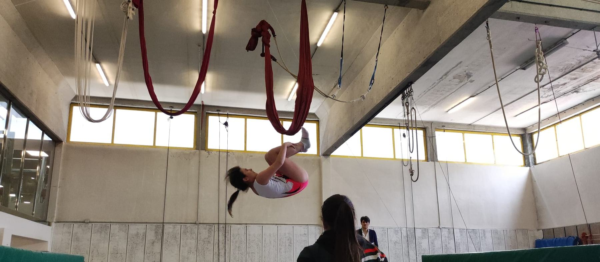

TRA
Tranpolina
Hamar elementuko segidak —jauziak, birak eta itzulipurdiak— ohe elastikoaren gainean. 2000ko Sydneyko Jokoez geroztik da diziplina olinpikoa.


Tranpolineko gimnastika · Bilbo
Tranpolina, minitranpolin bikoitza eta tumblinga. Larunbatetan entrenatzen dugu Txurdinagako kiroldegiko fosoan.
Zer egiten dugu
Hamar elementuko segidak —jauziak, birak eta itzulipurdiak— ohe elastikoaren gainean. 2000ko Sydneyko Jokoez geroztik da diziplina olinpikoa.

Lasterketa, bi elementu bi altuerako minitranpolinean eta lurreratzea koltxonetan. Zehaztasuna leku oso txikian.

Zortzi elementu akrobatiko jarraian, abiadura bizian, pista elastiko baten gainean.
Lorpenak
Klubeko gimnastak tranpolineko Munduko Txapelketetan lehiatu dira, eta denboraldi bakoitzean gure gimnasta gazteenek jauzi egiten dute estatu mailako lehen lehiaketara.

Idatzi iezaguzu Instagramen edo posta elektronikoz, eta taldean tokirik dagoen esango dizugu.